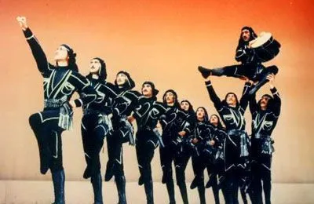
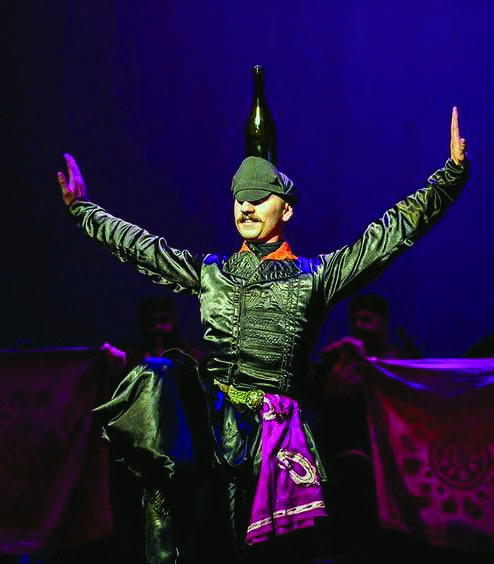
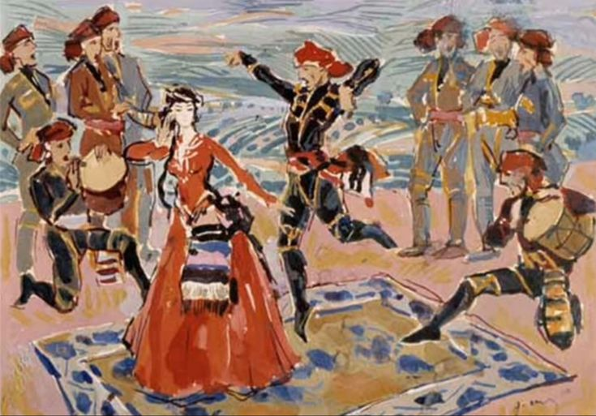
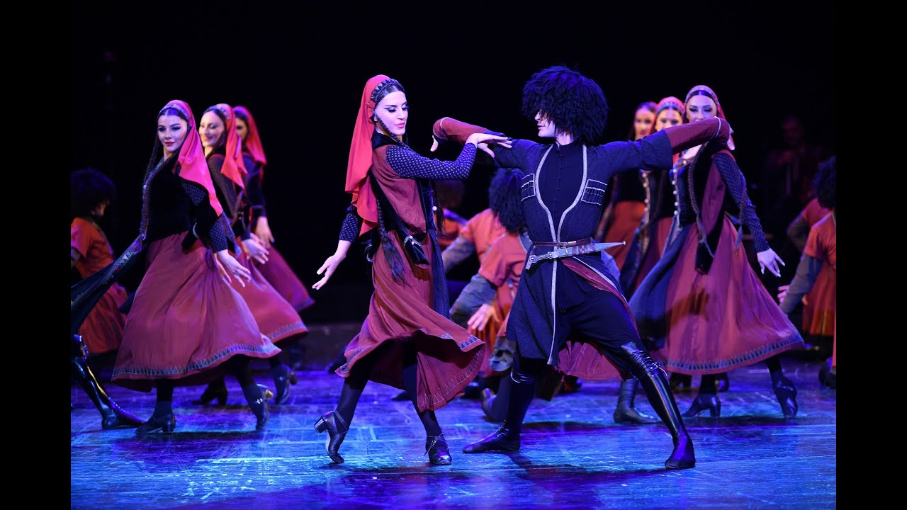

ცეკვის სახეობები

ხორუმი
საბრძოლო ხასიათის ცეკვაა, რომელიც ნათლად გადმოსცემს საბრძოლო სცენას. ის იყოფა ეპიზოდებად, რომლებიც ერთიანი სიუჟეტური ხაზით უკავშირდებიან ერთმანეთს: 1. მეომართა დასაბანაკებელი ადგილის ძებნა; 2. მტრის დაზვერვა; 3. იერიში; 4. გამარჯვება და ზეიმი.

კინტოური
ქალაქური და მხიარული ცეკვა. „კინტოური“, „შალახო“ — ქართული ქალაქური ცეკვაა, რომელიც გავრცელებული იყო ძველ თბილისში XIX საუკუნიდან. სახელწოდება მომდინარეობს სიტყვა კინტოდან. ცეკვას საფუძვლად დაედო ძველი ქართული გლეხური ცეკვის ილეთები. სრულდება დუდუკის და არღნის თანხლებით.

აჭარული
„აჭარული განდაგანა“ აჭარის რეგიონის კულტურის მნიშვნელოვანი ნაწილია და ასახავს აჭარის ცხოვრების სტილსა და ტრადიციებს. საუკუნეების განმავლობაში ეს ცეკვა თაობიდან თაობას გადაეცემოდა და აჭარაში პატივისცემით ტარდება ფესტივალებზე, საქორწილო ცერემონიებზე და სხვა დღესასწაულებზე. ეს ცეკვა აჭარის მაცხოვრებლებისათვის სიამაყისა და ერთგულების სიმბოლოა.

მთიულური
აღმოსავლეთ საქართველოს მთიანეთის (მთიულეთი) ტრადიციული, ენერგიული და საბრძოლო ხასიათის ქართული ხალხური ცეკვა, რომელიც ასახავს მთიელი ხალხის სიმტკიცეს, თავისუფლებისმოყვარეობასა და ვაჟკაცობას. ცეკვა გამოირჩევა სწრაფი ტემპით, მრავალფეროვანი ჩაკვრებით, ცერილეთებითა და პაექრობით მოცეკვავეთა ჯგუფებს შორის.